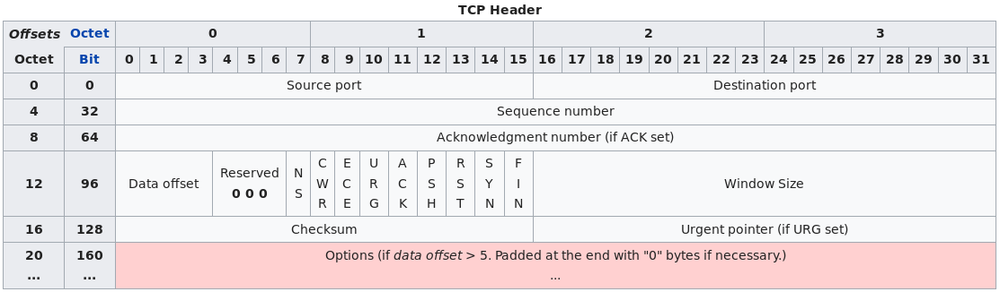

TCP segment structure
Transmission Control Protocol accepts data from a data stream, divides it into chunks, and adds a TCP header creating a TCP segment. The TCP segment is then encapsulated into an Internet Protocol (IP) datagram, and exchanged with peers.[4]
The term TCP packet appears in both informal and formal usage, whereas in more precise terminology segment refers to the TCP protocol data unit (PDU), datagram[5] to the IP PDU, and frame to the data link layer PDU:
Processes transmit data by calling on the TCP and passing buffers of data as arguments. The TCP packages the data from these buffers into segments and calls on the internet module [e.g. IP] to transmit each segment to the destination TCP.[6]
A TCP segment consists of a segment header and a data section. The TCP header contains 10 mandatory fields, and an optional extension field (Options, pink background in table).
The data section follows the header. Its contents are the payload data carried for the application. The length of the data section is not specified in the TCP segment header. It can be calculated by subtracting the combined length of the TCP header and the encapsulating IP header from the total IP datagram length (specified in the IP header).
Source port (16 bits)
Identifies the sending port.
Destination port (16 bits)
Identifies the receiving port.
Sequence number (32 bits)
Has a dual role: - If the SYN flag is set (1), then this is the initial sequence number. The sequence number of the actual first data byte and the acknowledged number in the corresponding ACK are then this sequence number plus 1.
- If the SYN flag is clear (0), then this is the accumulated sequence number of the first data byte of this segment for the current session.
Acknowledgment number (32 bits)
If the ACK flag is set then the value of this field is the next sequence number that the sender of the ACK is expecting. This acknowledges receipt of all prior bytes (if any). The first ACK sent by each end acknowledges the other end's initial sequence number itself, but no data.
Data offset (4 bits) S
pecifies the size of the TCP header in 32-bit words. The minimum size header is 5 words and the maximum is 15 words thus giving the minimum size of 20 bytes and maximum of 60 bytes, allowing for up to 40 bytes of options in the header. This field gets its name from the fact that it is also the offset from the start of the TCP segment to the actual data.
Reserved (3 bits)
For future use and should be set to zero.
Flags (9 bits) (aka Control bits)
Contains 9 1-bit flags - NS (1 bit): ECN-nonce - concealment protection (experimental: see RFC 3540).
- CWR (1 bit): Congestion Window Reduced (CWR) flag is set by the sending host to indicate that it received a TCP segment with the ECE flag set and had responded in congestion control mechanism (added to header by RFC 3168).
- ECE (1 bit): ECN-Echo has a dual role, depending on the value of the SYN flag. It indicates:
- If the SYN flag is set (1), that the TCP peer is ECN capable.
- If the SYN flag is clear (0), that a packet with Congestion Experienced flag set (ECN=11) in the IP header was received during normal transmission (added to header by RFC 3168). This serves as an indication of network congestion (or impending congestion) to the TCP sender.
- URG (1 bit): indicates that the Urgent pointer field is significant
- ACK (1 bit): indicates that the Acknowledgment field is significant. All packets after the initial SYN packet sent by the client should have this flag set.
- PSH (1 bit): Push function. Asks to push the buffered data to the receiving application.
- RST (1 bit): Reset the connection
- SYN (1 bit): Synchronize sequence numbers. Only the first packet sent from each end should have this flag set. Some other flags and fields change meaning based on this flag, and some are only valid when it is set, and others when it is clear.
- FIN (1 bit): Last packet from sender.
Window size (16 bits)
The size of the receive window, which specifies the number of window size units (by default, bytes) (beyond the segment identified by the sequence number in the acknowledgment field) that the sender of this segment is currently willing to receive (see Flow control and Window Scaling).
Checksum (16 bits)
The 16-bit checksum field is used for error-checking of the header, the Payload and a Pseudo-Header. The Pseudo-Header consists of the Source IP Address, the Destination IP Address, the protocol number for the TCP-Protocol (0x0006) and the length of the TCP-Headers including Payload (in Bytes).
Urgent pointer (16 bits)
if the URG flag is set, then this 16-bit field is an offset from the sequence number indicating the last urgent data byte.
Options (Variable 0–320 bits, divisible by 32)
The length of this field is determined by the data offset field. Options have up to three fields: Option-Kind (1 byte), Option-Length (1 byte), Option-Data (variable). The Option-Kind field indicates the type of option, and is the only field that is not optional. Depending on what kind of option we are dealing with, the next two fields may be set: the Option-Length field indicates the total length of the option, and the Option-Data field contains the value of the option, if applicable. For example, an Option-Kind byte of 0x01 indicates that this is a No-Op option used only for padding, and does not have an Option-Length or Option-Data byte following it. An Option-Kind byte of 0 is the End Of Options option, and is also only one byte. An Option-Kind byte of 0x02 indicates that this is the Maximum Segment Size option, and will be followed by a byte specifying the length of the MSS field (should be 0x04). This length is the total length of the given options field, including Option-Kind and Option-Length bytes. So while the MSS value is typically expressed in two bytes, the length of the field will be 4 bytes (+2 bytes of kind and length). In short, an MSS option field with a value of 0x05B4 will show up as (0x02 0x04 0x05B4) in the TCP options section. Some options may only be sent when SYN is set; they are indicated below as [SYN]. Option-Kind and standard lengths given as (Option-Kind,Option-Length). - 0 (8 bits): End of options list
- 1 (8 bits): No operation (NOP, Padding) This may be used to align option fields on 32-bit boundaries for better performance.
- 2,4,SS (32 bits): Maximum segment size (see maximum segment size) [SYN]
- 3,3,S (24 bits): Window scale (see window scaling for details) [SYN][7]
- 4,2 (16 bits): Selective Acknowledgement permitted. [SYN] (See selective acknowledgments for details)[8]
- 5,N,BBBB,EEEE,... (variable bits, N is either 10, 18, 26, or 34)- Selective ACKnowledgement (SACK)[9] These first two bytes are followed by a list of 1–4 blocks being selectively acknowledged, specified as 32-bit begin/end pointers.
- 8,10,TTTT,EEEE (80 bits)- Timestamp and echo of previous timestamp (see TCP timestamps for details)[10]
The remaining options are historical, obsolete, experimental, not yet standardized, or unassigned. Option number assignments are maintained by the IANA[11].
Padding
The TCP header padding is used to ensure that the TCP header ends, and data begins, on a 32 bit boundary. The padding is composed of zeros.[12]